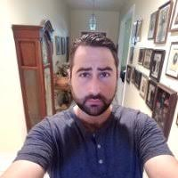

About Me
Bobby Lipson is the name; coding is the game. I am a former bartender, and while I had tons of fun with that, I am just over it! I'd like to start a career in web development and see where it can take me. I am excited for the possibility of a career that keeps me mentally stimulated. I grew up in the San Francisco Bay Area, and moved to Austin in March of 2016 to be closer to my family.
In my free time I enjoy playing golf, I like to travel, and my favorite thing to do is traveling somewhere to play golf. I also love puzzles! Which is one of the reasons why I was drawn to coding. Everything is one giant puzzle! I like sports; I am a big fans of the A's, Raiders, Warriors, and 49ers; but not the Giants!
Connect with Bob